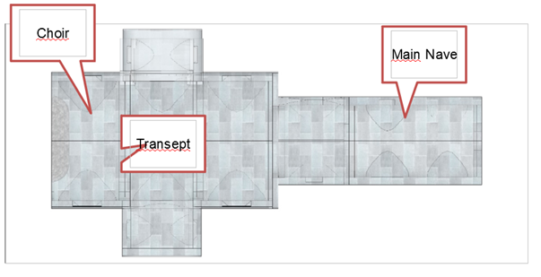
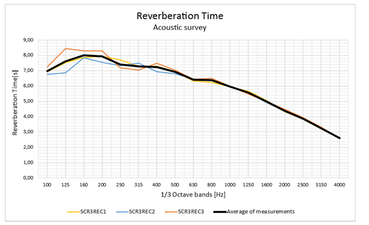
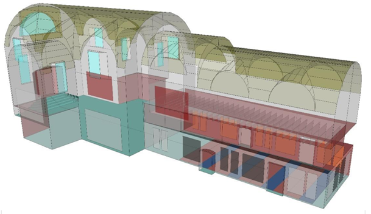
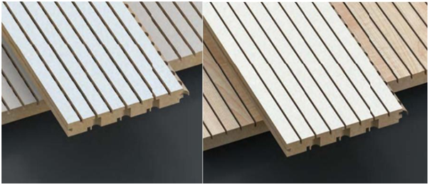
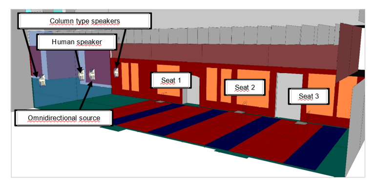
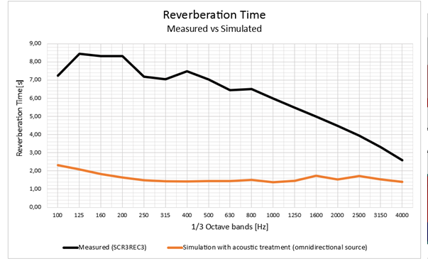
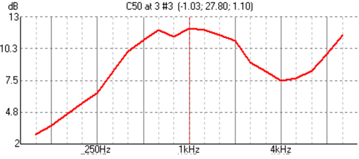
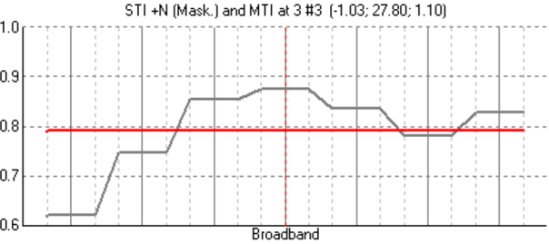
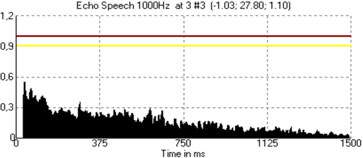

The ARQTROPIA architectural studio entrusted us with the task of an acoustic adaptation of the former Dei Cappuccini Church, located in the Chiavenna’s commune, northern Italy.
The objective of this project is the adaptation of the old building to be used as a museum, exhibition hall and auditorium, involving a total architectural reform.
Regarding acoustics, our objective was to achieve a design that allows a correct adaptation of the sound field according to the use that will be given to the new venue.
The church has the shape of a Latin cross and is made up of a central nave and a transept, transept and choir area. Our work was focused over the acoustic conditioning of the central nave, a space that is used for conferences and presentations, although we have also made some observations and recommendations for the other spaces.
The entire acoustic analysis started from one premise: the use that will be given to the space, as an auditorium. This concept is essential to adjust the relevant variables according to the established criteria. From this, those acoustic parameters strongly linked to the speech intelligibility quality have been considered: Reverberation time, clarity and intelligibility of the word (C50 and STI), defined in the ISO 3382 standards “Acoustics: Measurement of acoustic parameters in enclosures”, parts 1 and 2, and IEC 60268-16 in reference to STI. On the other hand, various amplification systems were evaluated, aiming to use speakers specifically designed for this type of spaces, which allow minimizing the effects of room reverberation.
Before starting the project, the current acoustic status of the church was evaluated through a series of acoustic measurements, which highlights the results of the reverberation time obtained through a series of measurements at various positions.
As it can be seen, the values at medium frequencies are between 6.0 and 7.5 seconds being totally inadvisable for any type of presentation where the spoken word must take precedence. From this, an acoustic model began to be developed to evaluate alternatives in order to propose an acoustic conditioning, considering various functional and aesthetic aspects
The simulations were carried out using an acoustic model of the venue using the EASE software and the AURA calculation module. Those proposed absorbent materials were chosen based on their absorption coefficients. The simulations were done by emitting sound rays (raytracing technique), using sources and receivers.
For the walls, perforated resonator panels covered by wooden slats were calculated and designed. These absorbs the mid-frequency range sounds, where the human voice spectrum predominates, in fact the main sound source.
In front of these panels, PET (Polyethylene Terephthalate) absorbent panels were installed. These can be removed if required.
On top of these coverings, perforated wooden resonators tuned to frequencies below 300 Hz were installed, in a similar fashion to boxes with a variable air chamber.s
In order to minimize the impact of reflections coming from the ceiling, PET absorbent panels suspended in the shape of rectangles were installed. The panels are spaced equidistantly
Regarding the separation between the main nave and the rest of the church, a laminated glass barrier was installed. The objective of this implementation is to reduce the sound energy of all those lateral reflections that run through the transept and chancel, and then return to the nave, reducing or eliminating possible unwanted echoes.
Finally, for the choir and transept area it was proposed some perforated panels on the side walls, while in the transept perforated panels with an air chamber were proposed.
We have recommended the RCF model L 2406T loudspeakers, which have a narrow vertical and a wide horizontal directivity, in order to focus the acoustic energy exclusively over the audience area.
Once the solutions described above were implemented, the evaluation of the needed parameters to characterize the acoustics quality was carried out with two source configurations:
The calculations were carried out on three listener positions, covering the front, center and back seats.
The simulations were based on the raytracing technique (geometrical acoustics). For each ray emitted from the source, the software calculates the sound pressure level and the time that this ray will arrive at the listening position, after reflected off the various surfaces in the room a certain number of times. The result of these simulations is an echogram for each receiving point (seats) which is a representation of the sound pressure level for each ray that encounters the listener, as a function of time.
In the first instance, a simulation was carried out for the reverberation time with the omnidirectional source to compare against the results of the measurements in the original state of the church.
The reduction achieved in the reverberation time is considerable. Starting from the original situation, where values greater than 6 seconds were measured at medium frequencies, it has been possible to reduce them to approximately 1.5 seconds. Although this average value is still above what is required, it represents a reduction of approximately 75% of the reverberation time. Furthermore, a uniform curve is observed, indicating that the amount of added absorption is balanced in the frequency range of interest.
Simulations were performed with the proposed electroacoustic system designed to further minimize the reverberant energy.
Reverberation time
C50 word clarity
Intelligibility of the word STI
Echo Speech
The reverberation time has been reduced to approximately 1.10 - 1.20 seconds at medium frequencies, now reaching acceptable values for the use that will be given to the venue. The C50 is clearly above 8 dB in that same range, giving greater weight to the early sound energy that reaches listeners. The STI, for its part, is above 0.77, classifying the word’s intelligibility as “Excellent”.
Finally, an additional study was carried out to evaluate potential late reflections that affect the spoken message. This was done by inspecting the “Echo Speech” graphics. Because there are no reflections (black areas) that exceed the line marked at 1, it is verified that there will be no echo problems.
The original state of the church, described by the acoustic measurements, as well as the intervention limitations and the total volume (≈ 2,338 m3) were the restrictions of the project. However the mid-frequency reverberation time average value obtained (1.20 seconds) using a sound source that emulates a human speaker and two column-type speakers, is within an acceptable range for a space now used as a conference room. At this point, it should be noted that the values in the original conditions were between 6 and 8 seconds, vastly higher than those estimated in the simulations. The results also show that the values of this parameter begin to decrease from 4 kHz onwards, which contributes to reducing the “hiss” of the room, which is a typical problem in churches. The frequency uniformity of the curves shown ensures that the proposed absorption amount is properly balanced.
The C50 Clarity values are all greater than 0 dB, a good result for correct speech intelligibility. In the mid-frequencies (important since these are strongly related to the human voice) the C50 values are greater than 8 dB. These energy results were confirmed by calculating the STI, obtaining values above 0.77, qualifying the word’s intelligibility as “excellent”, which confirms the suitability of the absorption solutions chosen for the use of the room.
The architects were thrilled with the results achieved after the construction and the installation of the electroacoustic system. We must highlight their commitment to strictly following our instructions, being very satisfied with the acoustic results accomplished!